Modifying 2D elements
Solid Edge provides a wide range of tools for modifying 2D elements. 2D drawing and modification tools work together smoothly, so that you can modify your profiles, sketches, and 2D drawings as you work.
Using element handles
You can change the size, position, or orientation of an element with the cursor. When you select an element with the Select tool, its handles are displayed at key positions.
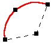
You can change the shape of a selected element by dragging one of its handles. The first figure shows the effect of dragging an end point handle. The second figure shows the effect of dragging the midpoint handle.
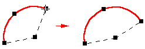
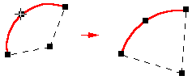
Moving and copying elements with the mouse
You can also drag a selected element to move it without changing its shape. Position the cursor so it is not over a handle, then drag the element to another location.
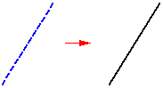
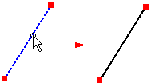
To copy an element, hold the Ctrl key while you drag.
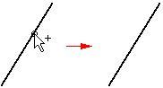
Applying relationships between elements
You can apply geometric relationships as you draw or after you draw. To apply a geometric relationship onto an existing element, select a relationship command and then select the element to which you want to add the relationship. When you apply a relationship to an element, the element is modified to reflect the new relationship.
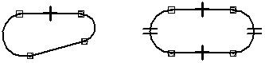
If a line and arc are not tangent (A), applying a tangent relationship modifies one or both elements to make them tangent (B).

When you use relationship commands, the software allows you to select only elements that are valid input for that command. For example, when you use the Concentric command, the command allows you to select only circles, arcs, and ellipses.
Changing relationships
You can delete a relationship as you would delete any other element by selecting a relationship handle, then press the Delete key.
Dimensions as relationships
Driving dimensions are relationships that allow you to maintain characteristics such as the size, orientation, and position of elements. When you place a driving dimension on or between elements, you can change the measured elements by editing the dimensional value. You do not have to delete or redraw elements at different sizes.
For example, you can dimension the radius of an arc to maintain its size (A), and then edit the value of the radius dimension to change its size (B).
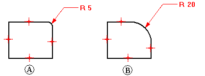
To create dimensional relationships, select a dimension command and click the elements you want to control.
Changing elements with relationships
When you modify 2D elements, elements with maintained relationships automatically update to honor the relationship. For example, if you move an element that shares a parallel relationship with another element, the other element moves as needed to remain parallel. If a line and an arc share a tangent relationship, they remain tangent when either is modified.
If you want to change an element by adding or removing a relationship, and the element does not change the way you expect, it may be controlled by a driving dimension. You can toggle the dimension from driving to driven, then make the change.
Element modification: trimming, extending, splitting, filleting, chamfering, offsetting, and stretching
Whether your sketching technique is to start big and whittle away or to start small and build up, relationships make it possible to sketch and evolve, rather than draw every element to its exact measurements. Solid Edge modification tools allow you to change a sketch and still maintain applied relationships.
Solid Edge provides commands to trim, extend, or split elements.
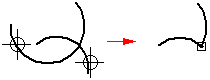
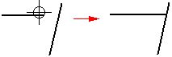
The Trim command trims an element back to the intersection with another element. To use the command, click on the part to trim.
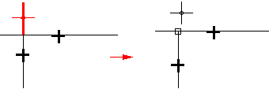
You can trim one or more elements by dragging the cursor across the part to trim.
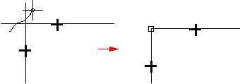
You can also select the elements you want to trim to. This selection overrides the default option of trimming to the next element only. To select an element to trim to, press the Ctrl key while selecting the element to trim to. For example, in normal operations, if you selected line (A) as the element to be trimmed, it would be trimmed at the intersection of the next element (B). However, you can select the edges (C) and (D) as the elements to trim to and the element will be trimmed at the intersection of those edges.
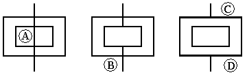
The Trim Corner command creates a corner by extending two open elements to their intersection.
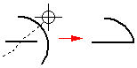
The Extend to Next command extends an open element to the next element. To do this, select the element and then click the mouse near the end to extend.
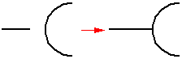
You can also select an element to extend to. This selection overrides the default option of extending to the next element only. To select an element to extend to, press the Ctrl key while selecting the element to extend to. For example, in normal operations, if you selected line (A) as the element to be extended, it would be extended to the intersection of the next element (B). However, you can select edge (C) to extend the line to that edge.
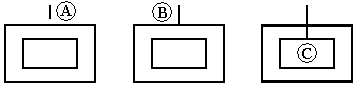
The Split command splits an open or closed element at the location you specify. When splitting elements, appropriate geometric relationships are applied automatically. For example, when splitting an arc, a connect relationship (A) is applied at the split point, and a concentric relationship (B) is applied at the center point of the arcs.
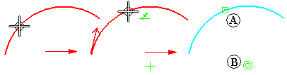
Fillet and Chamfer commands combine drawing and trimming operations.
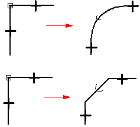
The Offset command draws a uniform-offset copy of selected elements.

You cannot select model edges with this command. If you want to offset model edges, use the Include command.
The Symmetric Offset command draws a symmetrically offset copy of a selected centerline.
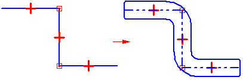
The Stretch command moves elements within the fence and stretches elements that overlap the fence.
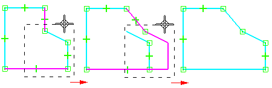
Relationships are added or removed as necessary during element modification. If you trim part of a circle and more than one arc remains, concentric and equal relationships are applied between the remaining arcs.
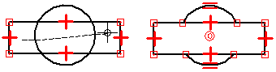
For example, you typically begin designing with key design parameters. You would draw known design elements in proper relation to one another (A) and then draw additional elements to fill in the blanks (B).
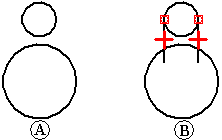
As you draw, you may need to modify elements to create a valid profile, or to make a drawing look the way you want it to (C-F). You can use modification commands such as Trim and Extend to modify the elements. The relationships are maintained and additional relationships are applied.
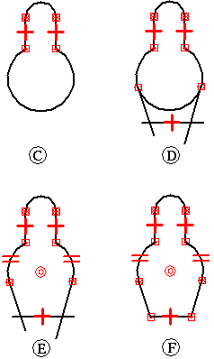
Element manipulation: rotating, scaling, mirroring, copying, and deleting
Tools are provided for moving, rotating, scaling, and mirroring elements. These tools can also be used for copying. For example, you can make a mirror copy, or you can cut or copy 2D elements from another application and paste them into the profile window, the assembly sketch window, or a drawing.
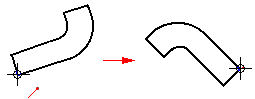
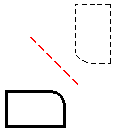
When you manipulate elements that have relationships, the relationships are retained when possible. For example, if you make a copy of two related elements, the relationship is also copied. However, if you copy one of two elements that are related to each other, the relationship is not copied.
Relationships that are no longer applicable after a manipulation are automatically deleted. For example, if you delete one of a pair of parallel lines, the parallel relationship is deleted from the remaining line.
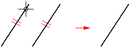
The Rotate command turns or turns and copies 2D elements about an axis. The command requires you to specify a center point for the rotation (A), a point to rotate from (B), and a point to rotate to (C).
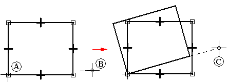
The Scale command uses a scale factor to proportionally scale or scale and copy 2D elements.
The Mirror command mirrors or mirror copies 2D elements about a line or two points.
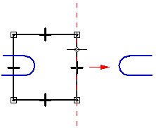
The Delete command removes 2D elements from the profile or sketch window.
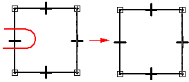